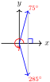
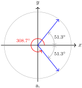
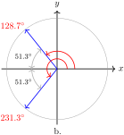
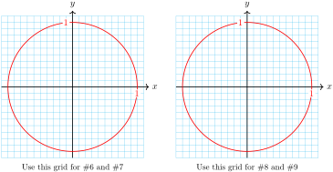
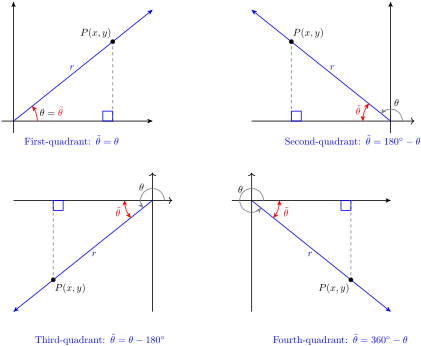
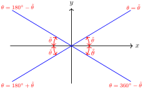

Section 4.1 Angles and Rotation
Subsection Introduction
So far we have studied angles as parts of triangles, but we can also use angles to describe rotation. For example, think of the minute hand on a clock. Every hour, the minute hand moves through one complete rotation, or \(360\degree\text{.}\) In two hours, the minute hand rotates through \(720\degree\text{.}\)
Example 4.1.
Through how many degrees does the minute hand rotate in an hour and a half? In forty minutes?
Look at the figure at right. An hour and a half represents 1.5 complete rotations, or
Forty minutes is two-thirds of an hour, so the minute hand rotates through
Checkpoint 4.2.
The volume control on an amplifier is a dial with ten settings, as shown at right. Through how many degrees would you rotate the dial to increase the volume level from 0 to 7?
\(252\degree\)
Subsection Angles in Standard Position
The degree measure of an angle depends only on the fraction of a whole rotation between its sides, and not on the location or position of the angle. To compare and analyze angles, we place them in standard position, so that the vertex of the angle is located at the origin and its initial side lies on the positive \(x\)-axis. The figure below shows several angles placed in standard position.
One-half a complete revolution is \(180\degree\text{,}\) and three-quarters of one revolution is \(270\degree\text{.}\) Thus, for angles between \(180\degree\) and \(270\degree\) in standard position, the terminal side lies in the third quadrant, and for angles between \(270\degree\) and \(360\degree\text{,}\) the terminal side lies in the fourth quadrant.
Example 4.3.
Find the degree measure of each angle shown below, and sketch the angle in standard position.
a. The angle \(\alpha\) is one-fifth of a complete revolution, or
In standard position, it is a first-quadrant angle, as shown in figure (a) below.
b. The angle \(\beta\) is \(\dfrac{11}{12}\) of a complete revolution, or
In standard position, it is a fourth-quadrant angle. (See Figure (b).)
Checkpoint 4.4.
Find the degree measure of each angle below, and sketch the angle in standard position.
a. \(120\degree\)

b. \(70\degree\)
Subsection Trigonometric Ratios for All Angles
In Chapter 3 we defined the sine, cosine, and tangent for obtuse angles by placing the angle in a Cartesian coordinate system. We can do the same for angles that represent rotations.
First, we place the angle \(\theta\) in standard position, with its vertex at the origin. We picture the terminal side sweeping counter-clockwise around a circle to form the angle.
Next, we choose a point \(P\) with coordinates \((x,y)\) on the terminal side, as shown at right. The distance from the origin to \(P\) is then \(r = \sqrt{x^2 + y^2}\text{.}\) The trigonometric ratios of \(\theta\) are defined as follows.
The Trigonometric Ratios.
If \(\theta\) is an angle in standard position, and \((x,y)\) is a point on its terminal side, with \(r = \sqrt{x^2 + y^2}\text{,}\) then
We can choose any point on the terminal side of the angle, and the trig ratios defined by its coordinates will be the same. (Can you explain why?)
Because it is the distance from the origin to \(P\text{,}\) \(r\) is always positive. However, \(x\) and \(y\) can be positive or negative (or zero), depending on the angle \(\theta\text{.}\) For example, in the second quadrant, \(x\) is negative but \(y\) is positive, so the cosine and the tangent of angles between \(90\degree\) and \(180\degree\) are negative, but their sines are positive.
Example 4.5.
Give the sign of each of the three trigonometric ratios of the angles.
\(\displaystyle 200\degree\)
\(\displaystyle 300\degree\)
a. In standard position, the terminal side of an angle of \(200\degree\) lies in the third quadrant. (See figure (a) below.) In the third quadrant, \(x \lt 0\) and \(y \lt 0\text{,}\) but \(r \gt 0\text{.}\) Thus, \(\sin 200\degree\) is negative, \(\cos 200\degree\) is negative, and \(\tan 200\degree\) is positive.
b. The terminal side of \(300\degree\) lies in the fourth quadrant, so \(x \gt 0\) and \(y \lt 0\text{,}\) and \(r \gt 0\text{.}\) Thus, \(\sin 300\degree\) is negative, \(\cos 300\degree\) is positive, and \(\tan 300\degree\) is negative.
Checkpoint 4.6.
For angles in each of the four quadrants shown below, explain why the indicated trig ratios are positive. Then complete the table.
| Quadrant | Degrees | Sine | Cosine | Tangent |
| First | \(0\degree \lt \theta \lt 90\degree\) | positive | positive | positive |
| Second | \(90\degree \lt \theta \lt 180\degree\) | \(\hphantom{0000}\) | \(\hphantom{0000}\) | \(\hphantom{0000}\) |
| Third | \(180\degree \lt \theta \lt 270\degree\) | \(\hphantom{0000}\) | \(\hphantom{0000}\) | \(\hphantom{0000}\) |
| Fourth | \(270\degree \lt \theta \lt 360\degree\) | \(\hphantom{0000}\) | \(\hphantom{0000}\) | \(\hphantom{0000}\) |
| Quadrant | Degrees | Sine | Cosine | Tangent |
| First | \(0\degree \lt \theta \lt 90\degree\) | positive | positive | positive |
| Second | \(90\degree \lt \theta \lt 180\degree\) | positive | negative | negative |
| Third | \(180\degree \lt \theta \lt 270\degree\) | negative | negative | positive |
| Fourth | \(270\degree \lt \theta \lt 360\degree\) | negative | positive | negative |
Example 4.7.
Find the sine, cosine, and tangent of the angle shown at right.
The \(y\)-coordinate of the point \(P\) is \(-5\text{,}\) and \(r = 6\text{,}\) so
To find the \(x\)-coordinate of \(P\text{,}\) we use the equation of a circle of radius \(6\text{,}\) \(x^2 + y^2 = 36\text{.}\)
Because \(P\) is in the third quadrant, \(x = -\sqrt{11}\text{.}\) Thus,
Checkpoint 4.8.
Find the sine, cosine, and tangent of the angle shown at right. The circle has radius 4.
\(\sin \theta = \dfrac{\sqrt{7}}{4},~~\cos \theta = \dfrac{-3}{4},~~\tan \theta = \dfrac{-\sqrt{7}}{3}\)
Subsection Reference Angles
In Section 3.1 we learned that the trig ratios for angles in the second quadrant are the same as the trig ratios for their supplements, except for sign. For example, you can use your calculator to verify that
| \(\sin 130\degree = 0.7660\) | \(\sin 50\degree = 0.7660\) |
| \(\cos 130\degree = -0.6428\) | \(\cos 50\degree = 0.6428\) |
| \(\tan 130\degree = -1.1918\) | \(\tan 50\degree = 1.1918\) |
The trig ratios for \(130\degree\) and \(50\degree\) have the same absolute value because the two triangles formed by the angles are congruent, as shown above.
\(\triangle OP^{\prime}Q^{\prime}\) is called a reference triangle for \(130\degree\text{,}\) and \(50\degree\) is called the reference angle.
The trig ratios for angles between \(180\degree\) and \(360\degree\text{,}\) whose terminal sides lie in the third and fourth quadrants, are also related to the trig ratios of familiar angles in the first quadrant. We "refer" the angle to a first quadrant angle with a congruent reference triangle.
Note 4.9.
Reference angles will be important when we need to solve trigonometric equations. There will always be two angles with the same trig ratio (except for quadrantal angles), and they will have the same reference angle.
We can construct reference triangles for angles in any of the four quadrants, and the trig ratios of the angle are the same as the trig ratios of its reference angle, up to sign. Here is how to construct a reference triangle for an angle :
Choose a point \(P\) on the terminal side.
Draw a line from point \(P\) perpendicular to the \(x\)-axis.
The figure below shows angles \(\theta\) in all four quadrants, and the reference angle, \(\widetilde{\theta}\text{,}\) for each. Study the figures, and make sure you understand the formula for finding the reference angle in each quadrant.
Note 4.10.
These observations may help you remember the formulas:
The right triangle formed in this way always lies between the terminal side and the \(x\)-axis.
The positive acute angle formed between the terminal side and the \(x\)-axis is the reference angle, and the right triangle is the reference triangle.
Activity 4.1. Reference Angles.

Use a protractor to draw an angle of \(56\degree\) in standard position. Draw its reference triangle.
Use your calculator to find the sine and cosine of \(56\degree\text{,}\) rounded to two decimal places. Label the sides of the reference triangle with their lengths.
What are the coordinates of the point \(P\) where your angle intersects the unit circle?
Draw the reflection of your reference triangle across the \(y\)-axis, so that you have a congruent triangle in the second quadrant.
You now have the reference triangle for a second-quadrant angle in standard position. What is that angle?
Use your calculator to find the sine and cosine of your new angle. Label the coordinates of the point \(Q\) where the angle intersects the unit circle.
Draw the reflection of your triangle from part (4) across the \(x\)-axis, so that you have a congruent triangle in the third quadrant.
You now have the reference triangle for a third-quadrant angle in standard position. What is that angle?
Use your calculator to find the sine and cosine of your new angle. Label the coordinates of the point \(R\) where the angle intersects the unit circle.
Draw the reflection of your triangle from part (7) across the \(y\)-axis, so that you have a congruent triangle in the fourth quadrant.
You now have the reference triangle for a fourth-quadrant angle in standard position. What is that angle?
Use your calculator to find the sine and cosine of your new angle. Label the coordinates of the point where the angle intersects the unit circle.
Generalize: All four of your angles have the same reference angle, \(56\degree\text{.}\) For each quadrant, write a formula for the angle whose reference angle is \(\theta\text{.}\)
Quadrant I:
Quadrant II:
Quadrant III:
Quadrant IV:
Example 4.11.
Find the reference angle for \(200\degree\text{.}\)
Sketch \(200\degree\) and its reference angle in standard position, along with their reference triangles. Verify that both angles have the same trigonometric ratios, up to sign.
In standard position, an angle of \(200\degree\) lies in the third quadrant. Its reference angle is
\begin{equation*} 200\degree - 180\degree = 20\degree \end{equation*}Both angles are shown at right. Note that the reference triangle for \(200\degree\) is congruent to the reference triangle for \(20\degree\text{.}\) You can use your calculator to verify the following values.
Checkpoint 4.12.
Find the reference angle for \(285\degree\text{.}\)
Sketch \(285\degree\) and its reference angle in standard position, along with their reference triangles. Verify that both angles have the same trigonometric ratios, up to sign.
\(\displaystyle 75\degree\)
- 
\(\sin 285\degree = -\sin 75\degree = -0.9659\text{,}\) \(\cos 285\degree = \cos 75\degree = 0.2588\text{,}\) \(\tan 285\degree = -\tan 75\degree = -3.7321\)
Subsection Using Reference Angles
Here is a summary of our discussion about reference angles.
Reference Angles.
The trigonometric ratios of any angle are equal to the ratios of its reference angle, except for sign. The sign of the ratio is determined by the quadrant.
Any acute angle \(\theta\) is the reference angle for four angles between \(0\degree\) and \(360\degree\text{,}\) one in each quadrant. The figure below shows the four angles in standard position whose reference angle is \(35\degree\text{.}\) Note that each angle is found by measuring \(35\degree\) from the \(x\)-axis in the appropriate quadrant, and that the four angles together make a “bow-tie” shape.

From the figure, you can see that the angles in each quadrant with a given reference angle are computed as follows.
To find an angle \(\theta\) with a given reference angle \(\widetilde{\theta}\text{:}\).
| Quadrant I: \(~~~~~~\theta = \widetilde{\theta}\) | \(\hphantom{0000}\) | Quadrant II: \(~~~~\theta = 180\degree - \widetilde{\theta}\) |
| Quadrant III: \(~~~~~\theta = 180\degree + \widetilde{\theta}\) | \(\hphantom{0000}\) | Quadrant IV: \(~~~~\theta = 360\degree - \widetilde{\theta}\) |
Example 4.13.
Find two angles between \(0\degree\) and \(360\degree\) whose cosine is \(\dfrac{5}{8}\text{.}\) Round your answers to the nearest tenth of a degree.
Find two angles between \(0\degree\) and \(360\degree\) whose cosine is \(\dfrac{-5}{8}\text{.}\) Sketch the reference triangle for each angle.
-
One of the angles we want is \(\cos^{-1}\dfrac{5}{8}\text{.}\) Enter
\begin{equation*} \text{COS}^{-1} (5 \div 8) \end{equation*}in your calculator to find the first quadrant angle, \(51.3\degree\text{.}\) The cosine is also positive in the fourth quadrant, so we look for the angle in the fourth quadrant with reference angle \(51.3\degree\text{.}\) That angle is \(360\degree - 51.3\degree = 308.7\degree\text{,}\) as shown at right.
 -
Because the cosine is negative in the second and third quadrants, we would like angles \(\theta\) in those quadrants whose reference angle is \(\widetilde{\theta} = 51.3\degree\text{.}\) In the second quadrant, we find
\begin{align*} \theta \amp = 180\degree - \widetilde{\theta}\\ \amp = 180\degree - 51.3\degree = 128.7\degree \end{align*}And in the third quadrant,
\begin{align*} \theta \amp = 180\degree + \widetilde{\theta}\\ \amp = 180\degree + 51.3\degree = 231.3\degree \end{align*}Both angles are shown above. You can check that the cosines of \(128.7\degree\) and \(231.3\degree\) are both approximately \(-0.625\text{.}\)
Checkpoint 4.14.
Find an angle in the third quadrant whose tangent is \(3.66\text{.}\) Round your answer to the nearest tenth of a degree.
Use reference angles to find two angles whose tangent is \(-3.66\text{.}\)
\(\displaystyle 254.7\degree\)
\(105.3\degree\text{,}\) \(~-258.3\degree\)
Subsection Coterminal Angles
Because \(360\degree\) represents one complete revolution, we can add or subtract a multiple of \(360\degree\) to any angle, and the terminal side will arrive at the same position. For example, the angles \(70\degree\) and \(430\degree\) have the same terminal side because \(430\degree = 70\degree + 360\degree\text{.}\) Such angles are called coterminal.
The angle \(790\degree\) is also coterminal with \(70\degree\text{,}\) because \(790\degree = 70\degree+ 2(360\degree)\text{.}\) See the figure below.
Because coterminal angles have the same standard position, their trigonometric ratios are equal. For example, you can verify that, to four decimal places,
Example 4.15.
Find an angle between \(0\degree\) and \(360\degree\) that is coterminal with \(520\degree\text{.}\)
Use a calculator to verify that the trig ratios of \(520\degree\) are the same as the ratios of the coterminal angle.
We subtract multiples of \(360\degree\) from \(520\degree\) until the remainder is less than \(360\degree\text{.}\)
\begin{equation*} 520\degree - 360\degree = 160\degree \end{equation*}Because \(160\degree\) is between \(0\degree\) and \(360\degree\text{,}\) this is the angle we want.Enter SIN 160 and SIN 520 to see that
\begin{equation*} \sin 160\degree = \sin 520\degree = 0.3420 \end{equation*}Enter COS 160 and COS 520 to see that\begin{equation*} \cos 160\degree = \cos 520\degree = -0.9397 \end{equation*}Enter TAN 160 and TAN 520 to see that\begin{equation*} \tan 160\degree = \tan 520\degree = -0.3640 \end{equation*}
If the direction of rotation is important, we let positive angles represent rotation in the counter-clockwise direction, and negative angles represent rotation in the clockwise direction. For example, the angle \(-60\degree\) shown at right lies in the fourth quadrant. It is coterminal with \(-60\degree + 360\degree = 300\degree\text{.}\)
Checkpoint 4.16.
Find two angles coterminal with \(102\degree\text{,}\) one positive and one negative.
\(462\degree\text{,}\) \(~-258\degree\)
Subsection Solving Trigonometric Equations
In Chapter 3 we saw that there are always two angles between \(0\degree\) and \(180\degree\) with a given sine ratio between 0 and 1.
For example, the two solutions to the equation \(~~\sin \theta = 0.4226~~\) are \(25\degree\) and \(155\degree\text{.}\) That is,
These two angles are supplementary, so they have the same reference angle, as shown below.
There are also two solutions between \(0\degree\) and \(360\degree\) to the equation \(~~\sin \theta = -0.4226~~\text{.}\) They are the angles in the third and fourth quadrants whose reference angle is \(25\degree\text{,}\) namely \(205\degree\) and \(355\degree\text{,}\) as shown above.
In fact, there are always two angles between \(0\degree\) and \(360\degree\) (except for the quadrantal angles) that have the same sine. There are also two angles that have the same cosine, and two angles that have the same tangent.
Example 4.17.
Solve the equation
for angles between \(0\degree\) and \(360\degree\text{.}\) Round your answers to the nearest degree.
Enter 2nd SIN \(-0.6428\) to find that
The angle \(-40\degree\) is in the fourth quadrant, but it is not between \(0\degree\) and \(360\degree\text{.}\) We need an angle that is coterminal with \(-40\degree\text{,}\) so we add \(360\degree\text{.}\)
Thus, one of the solutions is \(320\degree\text{.}\) The sine is also negative in the third quadrant, so there should also be a solution in the third quadrant. The reference angle for \(320\degree\) is \(40\degree\text{,}\) and the third-quadrant angle with reference angle \(40\degree\) is \(220\degree\text{,}\) as shown at right.You can check that, rounded to four decimal places, both angles satisfy the equation, that is,
Caution 4.18.
When you ask your calculator to find an angle with a given sine by pressing 2ndSIN, it will give you only one of the many possible answers. The same is true of the 2ndCOS and 2ndTAN keys. You must be careful to choose the appropriate answer for the situation, using reference and coterminal angles.
Checkpoint 4.19.
Solve the equation \(\tan \theta = -0.4\) for angles between \(0\degree\) and \(360\degree\text{.}\)
\(338.2\degree\text{,}\) \(~158.2\degree\)
Note 4.20.
In the previous example we found two solutions of the equation \(\sin \theta = -0.6428\text{.}\) Actually, there are infinitely many solutions -- namely, all the angles coterminal with \(320\degree\) or \(220\degree\text{.}\) Some of these angles are listed below.
Because we can easily find coterminal solutions by adding or subtracting multiples of \(360\degree\text{,}\) when solving an equation we usually list only the solutions between \(0\degree\) and \(360\degree\text{.}\)
Subsection The Special Angles
The angles \(30\degree,~45\degree\) and \(60\) are called the special angles because we can express the exact values of their trigonometric ratios in terms of radicals. There are special angles in all four quadrants; namely, those whose reference angles are \(30\degree,~45\degree\) and \(60\text{.}\)
Example 4.21.
Find exact values for the sine, cosine, and tangent of \(210\degree\text{.}\)
An angle of \(210\degree\) lies in the third quadrant, and its reference angle is
We draw a reference triangle as shown at right. Because the sides of a 30-60-90 triangle are in the ratio \(1:\sqrt{3}:2\text{,}\) we can choose point \(P\) with coordinates \((-\sqrt{3}, -1)\text{.}\)
(We must be careful to use the correct signs for the coordinates of point \(P\text{;}\) in the third quadrant both coordinates are negative.) Thus, \(x = -\sqrt{3},~ y = -1\text{,}\) and \(r = 2\text{,}\) so
Checkpoint 4.22.
Sketch an angle of \(300\degree\) in standard position, and its reference triangle. Find the reference angle for \(300\degree\text{.}\)
Find exact values for the sine, cosine, and tangent of \(300\degree\text{.}\)
\(\displaystyle 60\degree\)
\(\sin 300\degree = \dfrac {-\sqrt{3}}{2}\text{,}\) \(~\cos 300\degree = \dfrac {1}{2}\text{,}\) \(~\tan 300\degree = -\sqrt{3}\)
All of the special angles are shown at right. In the Homework Problems you will calculate the three trigonometric ratios for all the special angles, and you should memorize these values, or be able to calculate them quickly.
Activity 4.2. Unit Circles.
-
Use a protractor to draw an angle \(36\degree\) in standard position.
Estimate the coordinates of the point \(P\) where the terminal side of the angle intersects the circle of radius \(r=2\text{.}\)
Calculate approximate values for \(\cos \theta\) and \(\sin \theta\) using the coordinates of \(P\text{.}\)
Estimate the coordinates of the point \(Q\) where the terminal side of the angle intersects the circle of radius \(r=1\text{.}\)
Calculate approximate values for \(\cos \theta\) and \(\sin \theta\) using the coordinates of \(Q\text{.}\)
Use a protractor to draw an angle \(107\degree\) in standard position. Repeat parts (a)-(d) for this new angle.
Use a protractor to draw an angle \(212\degree\) in standard position. Repeat parts (a)-(d) for this new angle.
Use a protractor to draw an angle \(325\degree\) in standard position. Repeat parts (a)-(d) for this new angle.
-
What do you notice about the coordinates of the point located on the unit circle by an angle and the values of the trig ratios of that angle?
 -
Draw two different angles \(\alpha\) and \(\beta\) in standard position whose sine is \(0.6\text{.}\)
Use a protractor to measure \(\alpha\) and \(\beta\text{.}\)
Find the reference angles for both \(\alpha\) and \(\beta\text{.}\) Draw in the reference triangles.
-
Draw two different angles \(\theta\) and \(\phi\) in standard position whose sine is \(-0.8\text{.}\)
Use a protractor to measure \(\theta\) and \(\phi\text{.}\)
Find the reference angles for both \(\theta\) and \(\phi\text{.}\) Draw in the reference triangles.
-
Draw two different angles \(\alpha\) and \(\beta\) in standard position whose cosine is \(0.3\text{.}\)
Use a protractor to measure \(\alpha\) and \(\beta\text{.}\)
Find the reference angles for both \(\alpha\) and \(\beta\text{.}\) Draw in the reference triangles.
-
Draw two different angles \(\theta\) and \(\phi\) in standard position whose cosine is \(-0.4\text{.}\)
Use a protractor to measure \(\theta\) and \(\phi\text{.}\)
Find the reference angles for both \(\theta\) and \(\phi\text{.}\) Draw in the reference triangles.
If you know one angle whose sine is a given positive number, how can you find the other angle?
If you know one angle whose sine is a given negative number, how can you find the other angle?
If you know one angle whose cosine is a given positive number, how can you find the other angle?
If you know one angle whose cosine is a given negative number, how can you find the other angle?
-
Use your answers to the problems above to solve the equations for \(0\degree \le \theta \le 360\degree\text{.}\)
\(\displaystyle \sin \theta = 0.6\)
\(\displaystyle \sin \theta = -0.8\)
\(\displaystyle \cos \theta = 0.3\)
\(\displaystyle \cos \theta = -0.4\)
Subsection The Unit Circle
Figure (a) below shows an angle of \(30\degree\) in standard position in a circle of radius 2. The hypotenuse of its reference triangle is the radius of the circle, so the legs of the triangle have lengths 1 and \(\sqrt{3}\text{.}\) The coordinates of the point \(P\) where the terminal side meets the circle are thus \((\sqrt{3}, 1)\text{.}\) (You should check that these coordinates satisfy the equation of the circle, \(x^2 + y^2 = 4\text{.}\))
Now consider the circle of radius 1 in Figure (b). (A circle of radius 1 is called a unit circle.) In this figure, the hypotenuse of the reference triangle for \(30\degree\) has length 1. What are the coordinates of the point \(Q\) where the terminal side meets the circle? Each side of this triangle is \(\frac{1}{2}\) the length of the sides of the similar triangle in Figure (a), so the coordinates of \(Q\) are \(\left(\dfrac{\sqrt{3}}{2}, \dfrac{1}{2}\right)\text{.}\) (Once again, you should check that these coordinates satisfy the equation of the circle, \(x^2 + y^2 = 1\text{.}\))
Perhaps you recognize the coordinates of the point \(Q\text{.}\) Because \(r = 1\) in this circle, the definitions of the sine and cosine are
We see that the coordinates \((x,y)\) of \(Q\) are given by \((\cos \theta, \sin \theta)\text{.}\) We have discovered an important property of unit circles.
Angles in a Unit Circle.
Let \(P\) be a point on a unit circle determined by the terminal side of an angle \(\theta\) in standard position. Then the coordinates \((x,y)\) of \(P\) are given by
Example 4.23.
Find the coordinates of point \(P\) on the unit circle shown at right.
The coordinates of \(P\) are given by
The reference angle for \(315\degree\) is \(~ 360\degree - 315\degree = 45\degree\text{,}\) so the trig ratios of \(315\degree\) are the same as the ratios for \(45\degree\text{,}\) up to sign.
Because \(315\degree\) is in the fourth quadrant, we have \(\cos 315\degree = \dfrac{1}{\sqrt{2}}\) and \(\sin 315\degree = \dfrac{-1}{\sqrt{2}}\text{.}\) Thus, the coordinates of \(P\) are \(\left(\dfrac{1}{\sqrt{2}}, \dfrac{1}{\sqrt{2}}\right)\text{.}\)
Checkpoint 4.24.
Find the sine, cosine, and tangent ofthe angle \(\varphi\) shown at right.
\(\sin \varphi = -0.7000\text{,}\) \(~\cos \varphi = -0.7141\text{,}\) \(~\tan \varphi = 0.9802\)
Review the following skills you will need for this section.
Algebra Refresher 4.3.
Evaluate the function.
-
\(f(x) = x^2 - 2x\)
\(\displaystyle f(-3)\)
\(\displaystyle f(a-3)\)
\(\displaystyle f(a) - 5\)
\(\displaystyle f(a) - f(5)\)
-
\(g(x) = \sqrt{x + 4}\)
\(\displaystyle g(9)\)
\(\displaystyle g(4h)\)
\(\displaystyle g(0) + g(1)\)
\(\displaystyle g(c^2)\)
-
\(F(x) = \dfrac{2}{x}\)
\(\displaystyle F\left(\dfrac{-1}{2}\right)\)
\(\displaystyle F\left(\dfrac{w}{2}\right)\)
\(\displaystyle F(w + 2)\)
\(\displaystyle F(w) + F(2)\)
-
\(G(x) = 2^x\)
\(\displaystyle G(-3)\)
\(\displaystyle G(a + 3)\)
\(\displaystyle G(a) + G(3)\)
\(\displaystyle G\left(\dfrac{3}{2}\right)\)
\(\underline{\qquad\qquad\qquad\qquad}\)
Algebra Refresher Answers
\(\displaystyle 15\)
\(\displaystyle a^2-8a+15\)
\(\displaystyle a^2-2a-5\)
\(\displaystyle a^2-2a-15\)
\(\displaystyle \sqrt{13}\)
\(\displaystyle 2\sqrt{h+1}\)
\(\displaystyle 2 + \sqrt{5}\)
\(\displaystyle \sqrt{c^2 + 4}\)
\(\displaystyle -4\)
\(\displaystyle \dfrac{4}{w} \)
\(\displaystyle \dfrac{2}{w + 2}\)
\(\displaystyle \dfrac{2}{w} + 1\)
\(\displaystyle \dfrac{1}{8}\)
\(\displaystyle 8(2^a)\)
\(\displaystyle 2^a + 8\)
\(\displaystyle 2\sqrt{2}\)
Subsection Section 4.1 Summary
Subsubsection Vocabulary
Standard position
Reference angle
Reference triangle
Coterminal angle
Unit circle
Subsubsection Concepts
We can use angles to describe rotation. Positive angles indicate rotation in the counter-clockwise direction; negative angles describe clockwise rotation.
We define the trigonometric ratios of any angle by placing the angle in standard position and choosing a point on the terminal side, with \(r = \sqrt{x^2 + y^2}\text{.}\)
The Trigonometric Ratios.
If \(\theta\) is an angle in standard position, and \((x,y)\) is a point on its terminal side, with \(r = \sqrt{x^2 + y^2}\text{,}\) then
\begin{equation*} \sin \theta = \dfrac{y}{r}~~~~~~~~~ \cos \theta = \dfrac{x}{r}~~~~~~~~~ \tan \theta = \dfrac{y}{x} \end{equation*}-
To construct a reference triangle for an angle :
Choose a point \(P\) on the terminal side.
Draw a line from point \(P\) perpendicular to the \(x\)-axis.
-
The reference angle for \(\theta\) is the positive acute angle formed between the terminal side of \(\theta\) and the \(x\)-axis.
 The trigonometric ratios of any angle are equal to the ratios of its reference angle, except for sign. The sign of the ratio is determined by the quadrant.
-
To find an angle \(\theta\) with a given reference angle \(\widetilde{\theta}\text{:}\).
Quadrant I: \(~~~~~~\theta = \widetilde{\theta}\) \(\hphantom{0000}\) Quadrant II: \(~~~~\theta = 180\degree - \widetilde{\theta}\) Quadrant III: \(~~~~~\theta = 180\degree + \widetilde{\theta}\) \(\hphantom{0000}\) Quadrant IV: \(~~~~\theta = 360\degree - \widetilde{\theta}\)  There are always two angles between \(0\degree\) and \(360\degree\) (except for the quadrantal angles) with a given trigonometric ratio.
Coterminal angles have equal trigonometric ratios.
To solve an equation of the form \(\sin \theta = k\text{,}\) or \(\cos \theta = k\text{,}\) or \(\tan \theta = k\text{,}\) we can use the appropriate inverse trig key on a calculator to find one solution (or a coterminal angle.) We use reference angles to find a second solution between \(0\degree\) and \(360\degree\text{.}\)
Angles in a Unit Circle.
Let \(P\) be a point on a unit circle determined by the terminal side of an angle \(\theta\) in standard position. Then the coordinates \((x,y)\) of \(P\) are given by
\begin{equation*} x = \cos \theta,~~~~~~y = \sin \theta \end{equation*}
Subsubsection Study Questions
Explain why \(\cos \theta \le 1\) for any angle \(\theta\text{.}\)
Is it true that \(\tan \theta \le 1\) for any angle \(\theta\) ? Explain.
Sketch a figure showing how to compute the reference angle for angles in each of the four quadrants.
True or false: If \(\beta \gt \alpha\text{,}\) then \(\sin \beta \gt \sin \alpha\text{.}\)
How many solutions are there to the equation \(\cos \theta = 0.4\) ? How many solutions are there between \(0\degree\) and \(360\degree\) ?
Subsubsection Skills
Use angles to represent rotations #1-6
Sketch angles in standard position #7-12
Find coterminal angles #13-24
Find and use reference angles #25-44, 55-60
Find trigonometric ratios for the special angles #45-54
Solve equations #61-72
Find coordinates of points on circles #73-82
Exercises Homework 4.1
1.
How many degrees are in each angle?
\(\dfrac{3}{5}\) of one rotation
\(\dfrac{3}{10}\) of one rotation
\(\dfrac{4}{3}\) of one rotation
\(\dfrac{8}{3}\) of one rotation
2.
How many degrees are in each angle?
\(\dfrac{5}{6}\) of one rotation
\(\dfrac{3}{8}\) of one rotation
\(\dfrac{7}{4}\) of one rotation
\(\dfrac{7}{12}\) of one rotation
3.
What fraction of a complete rotation is represented by each angle?
\(\displaystyle 45\degree\)
\(\displaystyle 300\degree\)
\(\displaystyle 540\degree\)
\(\displaystyle 420\degree\)
4.
What fraction of a complete rotation is represented by each angle?
\(\displaystyle 60\degree\)
\(\displaystyle 240\degree\)
\(\displaystyle 450\degree\)
\(\displaystyle 150\degree\)
5.
Through what angle does the hour hand of a clock rotate between 2 pm and 10 pm?
Through what angle does the hour hand of a clock rotate between 2 am and 10 pm?
6.
Through what angle does the hour hand of a clock rotate between 3:25 am and 3:50 am?
Through what angle does the hour hand of a clock rotate between 4:10 pm and 6:25 pm?
Exercise Group.
For Problems 7–12, calculate the degree measure of the unknown angle, and sketch the angle in standard position.
7.
8.
9.
10.
11.
12.
Exercise Group.
For Problems 13–18, find two angles, one positive and one negative, that are coterminal with the given angle.
13.
\(40\degree\)
14.
\(160\degree\)
15.
\(215\degree\)
16.
\(250\degree\)
17.
\(305\degree\)
18.
\(340\degree\)
Exercise Group.
For Problems 19–24, find a positive angle between \(0\degree\) and \(360\degree\) that is coterminal with the given angle.
19.
\(-65\degree\)
20.
\(-140\degree\)
21.
\(-290\degree\)
22.
\(-325\degree\)
23.
\(-405\degree\)
24.
\(-750\degree\)
Exercise Group.
For Problems 25–30,find the reference angle. Make a sketch showing the angle, the reference angle, and the reference triangle.
25.
\(100\degree\)
26.
\(125\degree\)
27.
\(216\degree\)
28.
\(242\degree\)
29.
\(297\degree\)
30.
\(336\degree\)
Exercise Group.
For Problems 31–36, find three angles between \(90\degree\) and \(360\degree\) with the given reference angle, and sketch all four angles on the same grid.
31.
\(15\degree\)
32.
\(26\degree\)
33.
\(40\degree\)
34.
\(50\degree\)
35.
\(68\degree\)
36.
\(75\degree\)
Exercise Group.
For Problems 37–44, use the values given below to find the trigonometric ratio. Do not use a calculator!
37.
\(\cos 157\degree\)
38.
\(\sin 226\degree\)
39.
\(\sin 314\degree\)
40.
\(\cos 203\degree\)
41.
\(\tan 258\degree\)
42.
\(\tan 282\degree\)
43.
\(\sin (-134\degree)\)
44.
\(\cos (-383\degree)\)
45.
On the circle in the figure, all angles are shown in standard position. Find the measure in degrees of the angles labeled (a)-(i).
46.
Find the reference angle for each of your answers in Problem 45.
47.
Draw three angles, one in each quadrant except the first, whose reference angle is \(60\degree\text{.}\)
Find exact values for the sine, cosine, and tangent of each of the angles in part (a).
48.
Draw three angles, one in each quadrant except the first, whose reference angle is \(30\degree\text{.}\)
Find exact values for the sine, cosine, and tangent of each of the angles in part (a).
49.
Draw three angles, one in each quadrant except the first, whose reference angle is \(45\degree\text{.}\)
Find exact values for the sine, cosine, and tangent of each of the angles in part (a).
50.
Complete the table with exact values.
| \(\theta\) | \(30\degree\) | \(45\degree\) | \(60\degree\) | \(120\degree\) | \(135\degree\) | \(150\degree\) | \(210\degree\) | \(225\degree\) | \(240\degree\) | \(300\degree\) | \(315\degree\) | \(330\degree\) |
| \(\cos \theta\) | \(\hphantom{0000}\) | \(\hphantom{0000}\) | \(\hphantom{0000}\) | \(\hphantom{0000}\) | \(\hphantom{0000}\) | \(\hphantom{0000}\) | \(\hphantom{0000}\) | \(\hphantom{0000}\) | \(\hphantom{0000}\) | \(\hphantom{0000}\) | \(\hphantom{0000}\) | \(\hphantom{0000}\) |
| \(\sin \theta\) | \(\hphantom{0000}\) | \(\hphantom{0000}\) | \(\hphantom{0000}\) | \(\hphantom{0000}\) | \(\hphantom{0000}\) | \(\hphantom{0000}\) | \(\hphantom{0000}\) | \(\hphantom{0000}\) | \(\hphantom{0000}\) | \(\hphantom{0000}\) | \(\hphantom{0000}\) | \(\hphantom{0000}\) |
| \(\tan \theta\) | \(\hphantom{0000}\) | \(\hphantom{0000}\) | \(\hphantom{0000}\) | \(\hphantom{0000}\) | \(\hphantom{0000}\) | \(\hphantom{0000}\) | \(\hphantom{0000}\) | \(\hphantom{0000}\) | \(\hphantom{0000}\) | \(\hphantom{0000}\) | \(\hphantom{0000}\) | \(\hphantom{0000}\) |
51.
In which two quadrants is the statement true?
The sine is negative.
The cosine is negative.
The tangent is positive.
52.
Find all angles between \(0\degree\) and \(360\degree\) for which the statement is true.
\(\displaystyle \cos \theta = -1\)
\(\displaystyle \sin \theta = -1\)
\(\displaystyle \tan \theta = -1\)
53.
Find two angles, \(0 \le \theta \le 360\degree\text{,}\) with \(\sin \theta = 0\text{.}\)
Find two angles, \(0 \le \theta \le 360\degree\text{,}\) with \(\cos \theta = 0\text{.}\)
54.
Find two angles, \(0 \le \theta \le 360\degree\text{,}\) with \(\sin \theta = \cos \theta\text{.}\)
Find two angles, \(0 \le \theta \le 360\degree\text{,}\) with \(\sin \theta = -\cos \theta\text{.}\)
Exercise Group.
For Problems 55–60, find a second angle between \(0\degree\) and \(360\degree\) with the given trigonometric ratio.
55.
\(\sin 75\degree\)
56.
\(\cos 32\degree\)
57.
\(\tan 84\degree\)
58.
\(\sin 16\degree\)
59.
\(\cos 47\degree\)
60.
\(\tan 56\degree\)
Exercise Group.
For Problems 61–66, find all solutions between \(0\degree\) and \(360\degree\text{.}\) Round to the nearest degree.
61.
\(\tan \theta = 8.1443\)
62.
\(\sin \theta = 0.7880\)
63.
\(\cos \theta = 0.9205\)
64.
\(\tan \theta = -3.4874\)
65.
\(\sin \theta = -0.9962\)
66.
\(\cos \theta = -0.0349\)
Exercise Group.
For Problems 67–72, find exact values for all solutions between \(0\degree\) and \(360\degree\text{.}\)
67.
\(\cos \theta = -\cos 24\degree\)
68.
\(\tan\theta = -\tan 9\degree\)
69.
\(\sin \theta =-\sin 66\degree\)
70.
\(\cos \theta = -\cos 78\degree\)
71.
\(\tan \theta = -\tan 31\degree\)
72.
\(\sin \theta = -\sin 42\degree\)
Exercise Group.
For Problems 73–78, use similar triangles to find the coordinates of the point on the circle.
73.
74.
75.
76.
77.
78.
Exercise Group.
For Problems 79–82,
Use the grid to estimate the coordinates of the point \(P\) on the unit circle.
Use a calculator to find the coordinates of the point \(P\text{.}\) Round to thousandths.
Estimate the coordinates of the point \(Q\) on the circle of radius 2, and verify with a calculator.
79.
80.
81.
82.
83.
Explain why the definitions of the trigonometric ratios for a third-quadrant angle (between \(180\degree\) and \(270\degree\)) are independent of the point \(P\) chosen on the terminal side. Illustrate with a figure.
84.
Explain why the definitions of the trigonometric ratios for a fourth-quadrant angle (between \(270\degree\) and \(360\degree\)) are independent of the point \(P\) chosen on the terminal side. Illustrate with a figure.